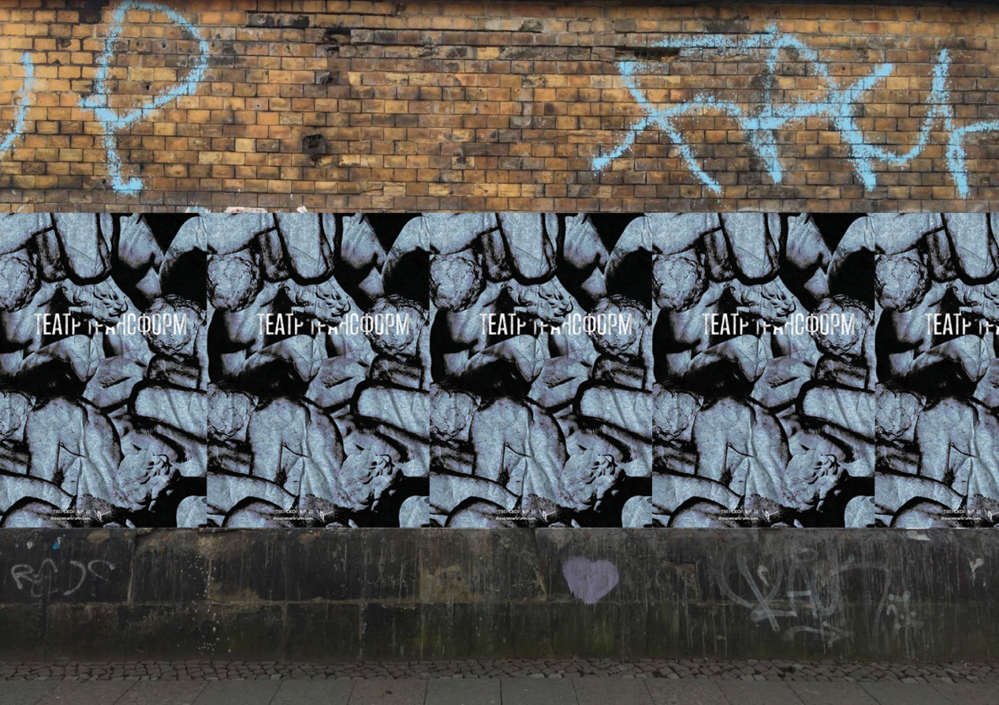

Графические плакаты
Первые театральные плакаты показывают тягостнные состояния человека, в которых у него появляется потребность в театре. Плакаты наследуют изначальный стиль проекта, однако перерабатывают его по-новому.

Типографические плакаты
В шрифтовых плакатах основную роль играет типографика, в моих она занимает самое главное место.

Веб-плакат
Одним из заданий, касающихся плакатов, было создание веб-постера. Моим стал фантазийный промо-сайт для проекта Театра Трансформ.